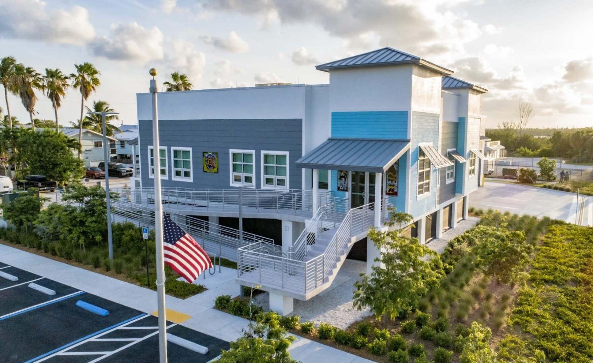

Government / Public Safety

Monroe County Fire Station 11 is the new home base for Monroe County Fire Rescue operations in the Lower Keys. Situated on Cudjoe Key - deep in the Florida Keys, roughly 23 miles from Key West - this station serves one of the most storm-exposed communities in the country. It was designed and built accordingly.
The station is elevated on a raised first floor, positioned above the flood plain required for Keys construction. It houses Ladder 11 and an Advanced Life Support rescue truck, and serves as a permanent, hardened piece of Monroe County's emergency infrastructure. The building had to be ready to operate when everything else around it is failing - which sets a clear bar for every component of the building envelope.
ACG delivered the commercial glazing package for Station 11 - storefront systems, entrance assemblies, and impact-rated windows throughout. In the Florida Keys, impact performance isn't optional. Every piece of glazing on this building had to meet the load requirements for a structure engineered to withstand Category 5 hurricane conditions and sustained wind gusts up to 200 miles per hour.
The finished station has a clean, modern public-safety aesthetic - two-story, elevated construction, blue and white exterior, the kind of building that announces itself as a permanent institution. The glazing holds the line on both performance and appearance.
Designed by CPH Corp, one of Florida's most experienced multi-disciplinary firms for municipal and public safety projects. CPH provided architecture, MEP, civil, and construction administration services for the station. ACG executed the glazing scope to spec in a location where logistics, lead times, and hurricane season make execution harder than the mainland - and where shortcuts show up fast.
Government, public safety, high-wind zones - ACG delivers impact-rated glazing packages built for Florida's harshest conditions. Send your plans and get a complete scope in 48 hours.
Send Us Plans